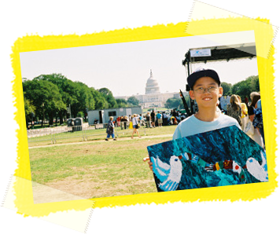
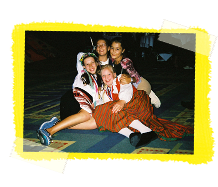

Sponsors
© International Child Art Foundation 2012
This interactive media project was created by students for educational purposes at The Art Institute of Atlanta and is in no way intended for commercial gain or as a source of public information.
Declining creativity and rising obesity are two major challenges our children face today. Creativity scores of Americans have started inching downwards, as reported in Newsweek magazine's July 10, 2010 cover story titled The Creativity Crisis. Children face the "4th-grade slump" in their creativity because of rote school environments worldwide, which shackles prospects for entrepreneurship and innovation necessary for prosperity, peace, and preservation. Moreover, the World Health Organization considers childhood obesity to be one of the most serious public health challenges of the 21st century. Unhealthy weight gain due to poor diet and lack of exercise is responsible for over 300,000 deaths annually in the U.S. and the cost to society for obesity is estimated at nearly $100 billion per year.
These two risks are addressed by the Arts Olympiad by employing the power of the arts and hence children's own creativity and imagination. A typical classroom is divided between athletes and non-athletically inclined students. Through a structured lesson plan the children are encouraged to break old stereotypes and embrace the Artist-Athlete Ideal of the creative mind and healthy body - mens sana in corpore sano.
The Arts Olympiad Lesson Plan culminates in painting and digital art competitions on the theme, My Favorite Sport. A thoughtful rendering of their favorite sport can inspire non-athletically inclined children who might face the "obesity risk" to engage in their favorite physical activity more frequently. Similarly, a thoughtful rendering of their favorite sport can inspire athletically inclined children who might face the "creativity risk" to start expressing themselves through the creative arts. The lesson plan also aims to develop empathy between these two student groups in order to avert violence in schools and deepen students' global awareness and understanding.
First launched in 1997, the Arts Olympiad has a four-year cycle modeled after the Olympics. The 5th Arts Olympiad will commence in early 2013 in classrooms worldwide. In 2014, the artworks produced under the Arts Olympiad will be exhibited at local venues, providing an opportunity for communities to celebrate their children's creativity. Distinguished panels of judges, which include schoolchildren, will select one best painting and one best digital art piece, thereby designating the young artists as the 5th Arts Olympiad winner. In 2015, the World Children's Festival will be held in Washington, DC on the National Mall to honor the Arts Olympiad winners. In 2016, the International Arts Olympiad Exhibition will tour internationally to major venues to promote global awareness of the gifts of creativity that children bring and the risks they must learn to deter. The International Arts Olympiad is organized internationally through the ICAF's country partners. In the United States, public and private schools, after-school programs, orphanages, juvenile detention centers and home-schoolers mail their artwork entries to the ICAF.
Many children do not gain the opportunity to express vivid ideas and thoughts unless presented with the Arts Olympiad experience. The Arts Olympiad has been adopted by schools, after-school programs, orphanages, juvenile detention centers, special education institutions, and organizations supporting street children and victims of abuse. Since 1997, more than five million children worldwide have benefited from the 1st, 2nd, 3rd and 4th Arts Olympiads.
The Arts Olympiad is the world's largest and most prestigious art and sport program for children. According to Congresswoman Louise Slaughter, Co-chair of the Congressional Arts Caucus, "The Arts Olympiad, produced every four years by the International Child Art Foundation, presents each of us a unique opportunity to involve young artists from our Congressional Districts in an event with important national and international implications." The United States Olympic Committee has granted the ICAF an exclusive license to use "Arts Olympiad" and related marks.


This interactive media project was created by students for educational purposes at The Art Institute of Atlanta and is in no way intended for commercial gain or as a source of public information.